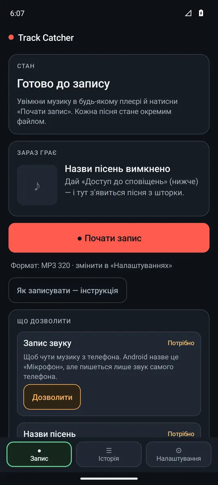
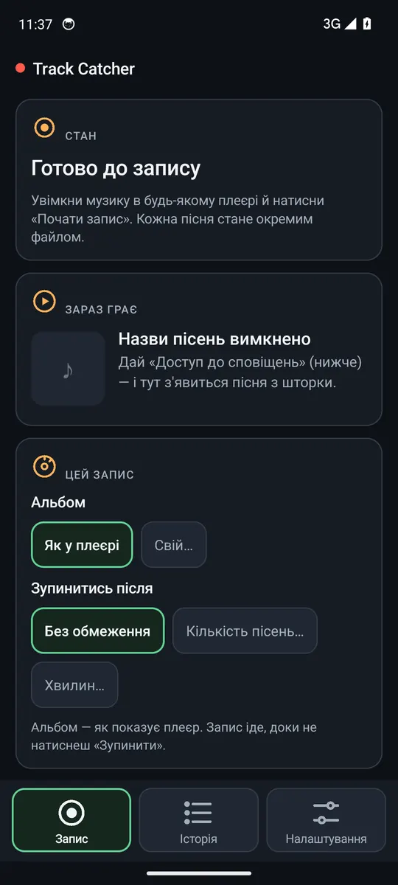
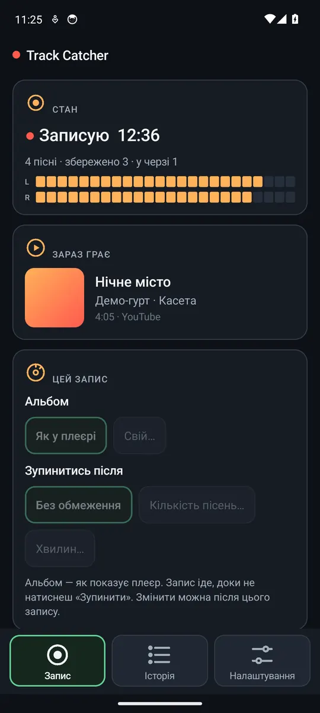
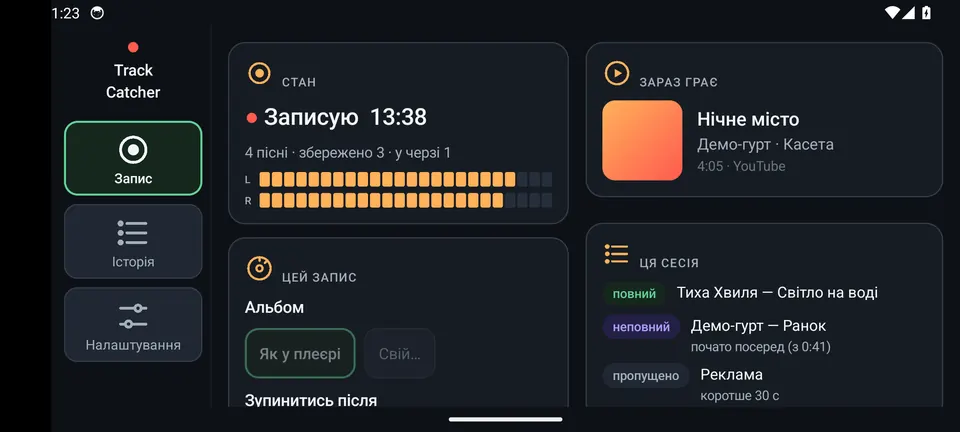
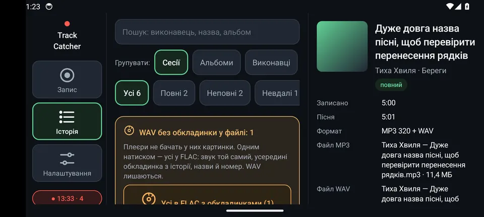

Записує музику, яку грає телефон, і сам ріже її на пісні. Кожна пісня — окремий файл з назвою зі шторки. Нижче — що він уміє. Торкнись пункту — відкриється докладно, крок за кроком.
На вкладці «Запис» є картка «Що дозволити». Кожен пункт — одна кнопка. Коли дозволено, пункт обводиться зеленою рамкою і пише «Готово».

Картка «Що дозволити» на першому запуску.
Запис звуку → Дозволити. Android назве це «Мікрофон», але пишеться лише звук самого телефона, не голос навколо.
Назви пісень → Відкрити налаштування → у списку «Доступ до сповіщень» увімкни Track Catcher. Так застосунок бачить назву, виконавця й обкладинку в шторці.
Повідомлення → Дозволити. Під час запису в шторці буде видно, що пишеться, і кнопку «Стоп».
Робота у фоні → Дозволити. Samsung не приспить запис, коли екран вимкнено.
Перемикач «Доступ до сповіщень» сірий? Android так захищає застосунки, встановлені з файлу. Налаштування → Застосунки → Track Catcher → ⋮ (угорі праворуч) → «Дозволити обмежені налаштування». Потім знову крок 2. У картці є кнопка «Відкрити «Про застосунок»» — вона веде саме туди.
Увімкни музику в будь-якому плеєрі (YouTube Music, Spotify, плеєр файлів…). Альбом чи плейлист — 10–20 пісень підряд.
Відкрий Track Catcher → вкладка Запис. У картці «Зараз грає» має з'явитись пісня зі шторки.
Натисни ● Почати запис.
За потреби — картка «Цей запис»: Альбом «Як у плеєрі» або «Свій…» (ввести назву чи вибрати з папок, що вже є — усі пісні підуть у цей альбом, і в папку, і в теги файлів; зручно для Suno, де альбому нема). Зупинитись після «Без обмеження» або «N пісень»: після N-ї пісні плеєр стане на паузу, а запис зупиниться сам — на екрані видно «7 з 26».
Android запитає «Почати запис?» — натисни «Почати». Це питання буде щоразу: так влаштований Android.
Готово: червоне «● Записую» і час, рівень звуку L/R рухається, видно скільки пісень і скільки збережено.
Щоб запис не зупинився, коли екран гасне, — ☾ Нічний екран (докладно).
Коли досить — ■ Зупинити запис (або «Стоп» у шторці). Останні пісні дозбережуться за кілька секунд.

Готово до запису.

Іде запис: рівень, пісня, «Ця сесія».
Поки плеєр на паузі, тиша у файл не пишеться. Можна поставити на паузу й продовжити — це буде той самий запис.
Не вмикай інші відео й музику — TikTok, YouTube, Instagram, голосові й відео в месенджерах. Їхній звук потрапить у файл, а ще вони можуть поставити плеєр на паузу.
Не натискай кнопку блокування. Android 15+ від цього зупиняє запис. Щоб екран не гас сам — ☾ Нічний екран (докладно).
Не перемикай пісню посеред, якщо потрібен повний запис: перервана пісня буде неповний.
Як записати найкраще
Увімкни «Не турбувати» (шторка → «Не турбувати»). Коли приходить сповіщення, Android на мить притишує музику — у записі це може бути чутно.
Спершу ● Почати запис, потім у плеєрі — перша пісня з самого початку. Тоді вона буде повний, а не «почато посеред».
Гучність телефона можна прикрутити: звук береться до регулятора гучності, тож у файлі має бути повна гучність. (Ще перевіряємо на телефоні.)
Пісня зберігається у файл, коли почнеться наступна або коли натиснеш ■ Зупинити запис. Тому «збережено 0» під час першої пісні — це нормально.
Плейлист закінчився — запис чекає («Нічого не грає»), тишу у файл не пише. Увімкни ще пісні або натисни «Зупинити».
Подзвонили посеред запису? Плеєр стане на паузу — розмова не записується. Після дзвінка пісня продовжиться в той самий файл.
Пісні з однаковою назвою (кілька версій «Velocity» в альбомі) стають окремими файлами, якщо в них різна тривалість або це різні пісні в плеєрі.
Звук пишеться без перерв. Коли в шторці змінюється назва, Track Catcher шукає тишу між піснями (в межах 2 секунд) і ріже там. Немає довгої тиші — шукає «обрив»: плеєр різко обриває стару пісню й за кілька мілісекунд починає нову; ріже там. Немає й обриву (пісні плавно перетікають) — ріже точно в момент зміни назви. Підкрутити можна в «Налаштування» → «Краї пісні».
повний
Пісня від початку до кінця.
неповний
Почато посеред (запис увімкнули, коли пісня вже грала), зупинено посеред або перемкнуто до кінця.
пропущено
Коротше за мінімум (реклама), тиша до початку музики, або така пісня вже є (якщо так налаштовано).
невдало
Плеєр грав, а звуку не було — цей застосунок, схоже, не дає себе записувати. Або не вистачило місця.
Тиша на початку й у кінці кожного файлу обрізається (лишається 0,2 с), а гучність плавно наростає на початку й затухає в кінці — по 0,5 с, щоб на стику не було «чирку».
Android 15 і новіші самі зупиняють запис, коли телефон блокується. Нічний екран не дає йому заблокуватись: екран чорний, яскравість майже нуль, а запис іде.
Видалити кілька записів: натисни й потримай плитку — вона стане в зеленій рамці. Торкайся інших, щоб додати чи зняти. Угорі — Видалити (N), «Вибрати всі видимі» й «Скасувати». Перед видаленням застосунок перепитає. Якщо в записі є файл — видалиться і файл; якщо файлу нема — лише запис з історії. «Назад» — вийти з вибору.
Історія → торкнись запису. У подробицях: скільки записано, тривалість пісні, формат, назва файлу й розмір, папка, як різалось, з якого плеєра, коли.
⏮ ▶︎ ⏭
Плеєр прямо в подробицях. Велика кругла кнопка — грати / пауза; смуга — торкнись або потягни, щоб перемотати; ліворуч під смугою — скільки зіграно, праворуч — скільки лишилось («−0:41»). ⏭ — наступна пісня (записана після цієї, як в альбомі), ⏮ — попередня; записи без файлу перескакуються. Грало — грає й наступна; дограла пісня — сама відкривається й грає наступна. Якщо збережено і MP3, і WAV — «Слухати: MP3 / WAV». Під час запису слухати не можна (плеєр, який записуєш, став би на паузу); сховаєш застосунок — пауза.
Інший плеєр
Відкрити запис у твоєму плеєрі.
Поділитись
Надіслати файл у месенджер, на пошту, в Drive.
Видалити файл
Спершу запитає «Видалити файл?». Файл зникне з «Музики», а запис в історії лишиться з поміткою «файл видалено».
Подробиці (знімок до v0.1.17 — плеєр тепер з ⏮ ▶ ⏭, «Закрити» — широка внизу).
Вкладка Налаштування. Вибране — у зеленій рамці. Зміни діють з наступного запису.
Формат
MP3 — для будь-якого плеєра, 4 хв ≈ 9 МБ (320). WAV — без втрат, 4 хв ≈ 46 МБ. MP3 + WAV — обидва файли.
Якість MP3
320 — на слух майже як оригінал. 192 — добре й удвічі менше місця. Також 128 і 256.
Коротші не зберігати
Зберігати все / 15 / 30 / 45 / 60 с. Коротші (реклама) підуть в історію як «пропущено», без файлу.
Краї пісні
Зрізати по 1 с на початку й у кінці (Так / Ні) — прибирає хвіст попередньої пісні й «чирк» перемикання. Наростання й затухання — без / 0,1 … 2 с (типово 0,5 с). Зсув розрізу −1 … +1 с: «+», якщо на початку файлу чути кінець попередньої пісні; «−», якщо в кінці чути початок наступної.
Якщо пісня вже є
«Записати ще раз» — новий файл з «(2)». «Пропустити» — якщо в історії вже є повний запис цієї пісні.
Папка: Музика › Track Catcher (Music/Track Catcher). Її видно в «Моїх файлах» і в будь-якому плеєрі. Пісні з альбомом ідуть у папку альбому: Track Catcher › Neon (вимкнути — «Налаштування» → «Папка для кожного альбому»).
Назва файлу: «Виконавець — Назва.mp3». Заборонені символи (/ : * ? …) замінюються на «_». Смайлики й невидимі символи з назви файлу й папки альбому прибираються (щоб файл відкривався будь-де — у магнітолі, старому плеєрі, на комп'ютері); усередині файлу назва лишається зі смайликами. Вимкнути — «Налаштування» → «Смайлики в назві файлу» → «Лишати».
Така назва вже є — новий файл отримує «(2)», «(3)»…
У файлі записані назва, виконавець, альбом і обкладинка — плеєри їх показують.
Швидко відкрити папку: Налаштування → «Куди зберігається» → Відкрити папку.
Своя папка, і на карті пам'яті: Налаштування → «Куди зберігається» → Вибрати свою папку → у вікні Android вибери папку (меню ☰ — там і карта пам'яті) → «Використати цю папку» → «Дозволити». Альбоми — папками всередині неї. Якщо папка недоступна (карту вийняли), пісні тимчасово йдуть у «Музика › Track Catcher» — нічого не губиться. Повернути як було — «Повернути «Музику»».
Поверни телефон — вкладки переїдуть у смугу ліворуч, а екрани стануть у дві колонки. Нічого не губиться: вибраний запис, фільтр, пошук, відкрите вікно. Запис іде далі.

«Запис»: ліворуч стан і кнопки, праворуч пісня й сесія.

«Історія»: список ліворуч, подробиці праворуч.
Під час запису на інших вкладках угорі видно червоний значок «● 12:34 · 3» — торкнись, і повернешся на «Запис».
Нова версія ставиться поверх — записи, історія й налаштування лишаються.
З Google Диска — прямо в застосунку
«Налаштування» → «Оновлення застосунку» → «Перевірити оновлення». Застосунок дивиться на Google Диск автора, і якщо там новіша версія — завантажує її, перевіряє (розмір, контрольна сума, версія, той самий ключ підпису) і відкриває вікно Android «Оновити». Уперше Android попросить один дозвіл: «Дозволити з цього джерела» → «Назад».
З версії 0.1.16 посилання вже вбудоване — нічого вставляти не треба. Старіша версія може попросити посилання: його надсилає автор («Поділитися посиланням на оновлення») — це посилання на маленький файл версії track-catcher-onovlennia.json, не на APK. Скопіюй і натисни «Вставити посилання»; не той файл застосунок не запам'ятає й пояснить, яке посилання потрібне. «Перевіряти самому раз на день: Так» — перевіряє тихо при відкритті й каже лише про нову версію.
Автору: «Опублікувати цю версію на Диск» — один раз створити два файли на Диску й вставити посилання на них (кроки 1–4 у вікні), далі після кожної нової версії — лише «Опублікувати зараз».
Через меню Termux «Track Catcher»
2
Встановити нову версію з GitHub.
10
Вікно встановлення сховалось? Відкрити ще раз.
5
Встановити версію, зібрану на іншому телефоні (для старого телефона).
Деякі застосунки забороняють записувати свій звук (часто — платний захищений контент). Спробуй інший плеєр. Також перевір, що у вікні Android «Почати запис?» натиснуто «Почати».
Усі пісні — «Невідома пісня» і не ріжуться
Немає дозволу «Доступ до сповіщень» (як дати) або плеєр не показує пісню в шторці. Тоді все пишеться одним файлом.
Запис зупинився сам
Найчастіше — телефон заблокувався (Android 15+). Користуйся нічним екраном. Записане до зупинки збережене. Якщо застосунок закрився посеред запису — шматки збережуться як «неповні» при наступному запуску.
Між піснями без паузи розріз іде точно в момент зміни назви в шторці — можливі пів секунди чужої пісні на краю. Напиши, з якого плеєра й на якій пісні, — підлаштуємо.
«Збережено 0», хоча пісня грає давно
Пісня зберігається, коли почнеться наступна або після «Зупинити». Якщо пісня вже давно мала закінчитись — подивись рядок «Звук від Android … плеєр 3:40 з 3:03» на вкладці «Запис» і надішли скрін.
У файлі чути чуже відео чи звук гри
Track Catcher пише все, що телефон грає як «медіа». Під час запису не вмикай інші відео й музику (докладно).
У файлі тріск, «чирк»
Подивись під час запису рядок «Звук від Android … пропусків N». Якщо не 0 — телефон не встиг забрати звук (був зайнятий); закрий важкі застосунки. У подробицях запису є «Перевантаження»: якщо там число — пісня надто гучна, піки обрізано, і в гучних місцях може «чиркати». Якщо 0, а тріск є — він, швидше за все, у самому плеєрі (так буває з музикою з інтернету): послухай те саме місце в оригіналі. Напиши, у якій пісні й на якій хвилині.
Файлу не видно в плеєрі
Плеєр міг ще не пересканувати пам'ять. Відкрий Налаштування → «Відкрити папку» або «Мої файли» → Музика → Track Catcher.